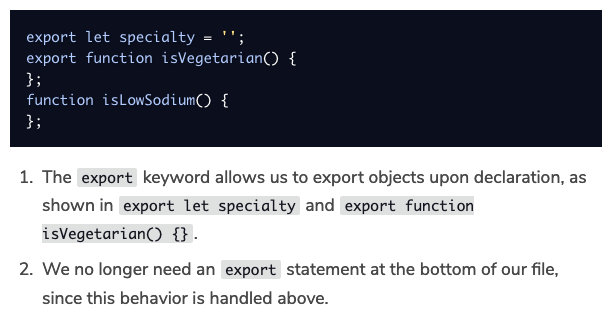

Introduction to JavaScript
Console
En JavaScript es posible escribir en consola con el fin de revisar si lo que se esta haciendo es correcto y poder detectar errores en el momento adecuado.
Para poder hacer esto se usa el código: console.log();
Comments
La programación realmente termina siendo algo muy colaborativo, por lo que se debe de poder entregar el código a otra persona y que este sea lo mas claro posible, para eso se pueden usar comentarios, estos se pueden insertar en un archivo .js con el uso de // al iniciar una linea. Esto no sera visible al ejecutar la aplicación, unicamente en el código.
También es posible hacer varias lineas de comentarios, para esto se usa: /* y se finaliza con */
Por ultimo, para comentar en la misma linea en la que hay código, es posible usar la notación: /*IGNORED*/, donde se reemplaza el IGNORED con el comentario.
Data Types
Son los tipos de datos con los cuales se puede programar, en el caso de JS hay 7 tipos distintos de datos:
- Numbers: Cualquier numero, incluyendo decimales (los cuales se separan con .)
-
String: Cualquier tipo de cadena de caracteres, se pueden separar con el uso de
"..."o de'...' -
Boolean: Este tipo de datos puede ser
trueofalse - Null: Este dato representa cuando no hay ningun valor. NO es como en Java, se debe asignar
-
Undefined: Se da cuando no se asigna ningun valor, se podria decir que es similar al
nullde Java, pero en JS es diferente, es decirnull != undefined - Symbol: Identificadores unicos, son para programacion avanzada.
- Object: Colecciones de datos.
Arithmetic Operators
En JS existen varios operadores que se pueden usar:
-
Add:
+ -
Substract:
- -
Multiply:
* -
Divide:
/ -
Remainder:
%
String Concatenation
En el caso de los String, si se desea unir dos o mas String se usa el operador +, aunque este tambien se usa en la suma, si se usa con String funciona como concatenador.
Properties
Cuando se guarda algun dato en JS este queda guardado sen su tipo de dato, en el caso del String es posible preguntar ciertas cosas, como por ejemplo su tamaño, para esto se hace, por ejemplo: 'Hello'.length, lo cual retorna el tamaño del String, es decir 5. Observar que no es como Java, es decir no requiere () al final.
Methods
Para hacer uso de los metodos que tiene JS por defecto, se hace de manera similar al caso anterior, la gran diferencia es que estos si tienen () al final, con esto se pueden diferenciar de las propiedades como tal.
Algunos metodos de String son:
.toUpperCase(): convierte la palabra o el string a mayusculas.startWith(): indica con que letra empieza la palabra, o el string
Built-in Objects
Es posible realizar operaciones mas complejas, al igual que en un futuro crear objetos para ser utilizados de la misma manera.
Por ejemplo existe el Objeto Math al cual se le pueden llamar ciertos metodos como por ejemplo: Math.random(), el cual redorna un numero aleatorio.
Variables
Variables
Una variable es un contenedor de un valor de algun tipo. Esto permite ponerles un nombre claro para ser usados más adelante.
Create a Variable:
Create a Variable: var
Una manera de declarar variables, la cual se ha modificado a lo largo del tiempo es con el uso de var, esta funciona de la siguiente manera:
var myName = 'Camilo';
Create a Variable: let
Este tipo de variable se usa cuando en un futuro esta puede ser reasignada, se usa con valores que pueden y van a cambiar segun alguna situacion especifica o simplemente porque eso es lo que se desea. Se usa de la siguiente manera:
let meal = 'Pizza';
meal = 'Burrito';
Tambien es posible usar esta variable para elementos que no se van a inicializar.
let price;
Create a Variable: const
Este tipo de variable se usa para asignar valores que no van a cambiar, es decir constantes. La ventaja del uso de esta variable es que si en un futuro, por algun motivo se intenta cambiar el valor, JS no lo permitira y mostrara un error. Se usa de la siguiente manera:
const myName = 'Camilo';
Mathematical Assignment Operators
Tanbien es posible hacer operaciones matematicas por fuera de un .log(), con el fin de realizar las operaciones y luego asignar el valor a una variable, por ejemplo:
let w = 4;
w = w + 1;
El resultado ahora es de w = 5
Esto aplica para todas las operaciones matematicas dichas anteriormente.
The Increment and Decrement Operator
Como en Java, es posible usar operadores como ++ o -- para realizar operaciones. Estos funcionan igual que en Java.
let a = 10;
a++;
a = 11;
a--;
a = 10;
Es importante saber que tambien existen operadores como: +=, -=, *=, /=
String Concatenation with Variables
Cuando se usa un String y el operador +, este concatena este String con lo que sea que se le ponga, es decir que es posible concatenar un 'Hola' con una variabel como las asignadas anteriormente como a. Esto se haria de la siguiente manera:
'Hola' + a;
Resultado: 'Hola 10'
String Interpolation
Es posible usar otro tipo de notacion para concatenar Strings, en este caso se usara un metodo diferente como se ve en el siguiente ejemplo:
let myName = 'Camilo';
let myCity = 'Bogota';
console.log(`My name is ${myName}. My favorite city is ${myCity}.`)
En este caso se usan ` en el String no ' ni ". El resultado de lo anterior es:
My name is Camilo. My favorite city is Bogota.
typeof operator
Cuando se programa, es importante saber con que tipo de datos estamos trabajando, para eso es posible usar typeof, el cual dira cual es el tipo de tado, es decir si es String, Number, Boolean y demas. Se usa de la siguiente manera:
const unknow1 = 'foo';
console.log(typeof unknow1);
Dando como resultado: string
Conditional Statements
What are Conditional Statements?
Es la manera en que se toman las decisiones en la vida, dependiendo de una situacion hago algo o hago otra cosa. Para esto se puede hacer con if, else o else if, adicionalmente existen operadores de comparacion, logicos, entre algunos otros.
The if keyword
Es la manera de escribir el Si pasa x entonces hago y...
if (true) {
console.log('This message will print!')
}
En el interior de los ( ) tiene que ir una condicion, la cual puede ser true o false, si es true entonces se ejecuta lo que esta entre los { }.
If...Else Statements
En la vida real no siempre se hace solo una accion como con el if, sino que se busca hacer una segunda accion cuando no se cumpla la condicion escrita, para eso se usa el comando else
if (false) {
console.log('The code in this block will not run.');
} else {
console.log('But the code in this block will!');
}
Comparison Operators
Algunos operadores de comparacion son similares a los de Java por lo cual seran faciles de entender.
- Less than:
< - Greater than:
> - Less than or equal to:
<= - Greater than or equal to:
>= - Is equal to:
=== - Is NOT equal to:
!==
Logical Operators
Los operadores logicos si son igual que en Java por lo que no se hablara mucho del tema.
- The and operator:
&& - The or operator:
|| - The not operator:
!
Truthy and Falsy
Es otra manera de revisar que algo debe o no correr, aunque el resultado no sea propiamente true, se debe tener en cuenta los valores que NO son verdaderos como:
0""y''nullundefinedNaN
Es posible sacarle ventaja a esto, si por ejemplo se desea mostrar el nombre de un usuario o un texto alternativo si no esta registrado se puede hacer de la siguiente manera:
let defaultName = username || 'Stranger';
Ternary Operator
Es una manera de simplificar aun mas la escritura, especialmente si se usa if...else
En lugar de escribir:
let isNightTime = true;
if(isNightTime) {
console.log('Turn on the lights!');
} else {
console.log('Turn off the lights!');
}
Es posible usar solo dos lineas y con eso que sea mas corto:
isNightTime ? console.log('Turn on the lights!'): console.log('Turn off the lights!');
Else If Statements
Estos son usados cuando hay mas de dos opciones, tienen el mismo funcionamiento de Java.
The switch keyword
Esto se usa cuando se tienen multiples casos, con los cuales hacerlo con la forma de if..else if.. else se volveria bastante largo y tedioso. Para este caso se usa el siguiente formato:
switch (algo) {
case 'caso1':
console.log(...);
break;
...
}
Functions
Function Declarations
En JS hay muchas maneras de declarar funciones, una de ellas es la siguiente:
Mas adelante, para hacer uso de una funcion basta con llamarla como en Java, es decir que para el caso planteado se llamaria de la siguiente manera:
greetWorld();
Parameters and Arguments
Al igual que en Java, las funciones pueden tener parametros con los cuales se hara algo en su cuerpo. Funcionan de manera igual a Java.
Si por algun motivo, no se coloca nada en el valor del parametro, JS automaticamente pone un valor por defecto, puede ser definido o simplemente queda "vacio".
function greeting (name = 'stranger') {
console.log(`Hello, ${name}!`)
}
En el caso anterior, si no se coloca nada como parametro entonces se usa 'stranger', pero si se coloca otro valor se usaria el calor suministrado.
Return
Si se desea retornar algo en la funcion se usa return al igual que en Java.
Arrow Functions
Es otra manera de escribir funciones, esto elimina la necesidad de usar la palabra function para la definicion de las mismas, ahora se usaria el formato (...) => {...};
En los (...) se colocarian los parametros.
La => apuntaria al cuerpo de la funcion.
El cuerpo estaria dentro de los {...}
Si no se usan parametros se usa (), pero si se usa UN solo parametro se pueden omitir los (), pero luego de esto, si se usan dos o mas, estos deben ir dentro de los (...)
Scope
El scope se refiere a donde pueden verse las variables al igual que ser accesadas.
Block and Scope
Los bloques es el codigo que esta encerrado entre {...}. Esto aplica para funciones, condicionales y demas.
Global Scope
Las variables que son declaradas al exterior de cualquier bloque son conocidas como de Scope Global, por lo cual pueden ser accedidas en cualquier parte del codigo, tanto dentro de bloques como por fuera de ellos.
Block Scope
Por otra parte, si la variable fue creada AL INTERIOR del bloque, esta solo podra ser accedida en esta seccion de codigo, mas no puede ser usada en otros bloques, ni en otra parte ademas de su bloque.
Scope Pollution
Se debe mantener buenas practicas al crear variables globales, ya que como se dijo antes, estas son accesibles desde cualquier parte del codigo, por lo que no es buena idea, aunque sea tentador, el uso de demasiadas variables de ese tipo.
Arrays
Create Arrays
En JS, los arreglos se pueden representar como listas, las cuales tienen elementos que estan enumerados como en Java.
let lista = ['obj1', 'obj2', 'obj3'];
Esa es la manera de crear un arreglo. Se debe tener en cuenta que es posible crear arreglos heterogeneos.
Accessing Elements
PAra poder acceder a los elementos de un arreglo se hace de la misma manera que en Java, es decir con un indice que permita saber a que objeto se hace referencia.
list[0];
Update Elements
De igual manera, para poder modificar ciertos elementos se puede hacer como en Java:
lista[2] = 'nuevoObj3';
Arrays with let and const
Para la creacion de arreglos se puede usar let o const sin ningun inconveniente, pero se debe tener en cuenta que se aplican las normas vistas antes, let permite modificaciones, pero en el caso de los arreglos es diferente ya que los elementos al interior del const son modificables, pero no se puede reemplazar el arreglo con uno nuevo.
The .push() Method
Con los arreglos de JS es posible agregar nuevos elementos para que la lista tenga más elementos, para eso se usa .push(...), con esto se logra adicionar elementos.
The .pop() Method
Es el opuesto al .push(...), adicionalmente este no tiene ningun elemento en los (...) ya que funciona para retirar elementos de una lista. Se debe tener en cuenta que el uso de este unicamente retira al elemento en la ULTIMA posicion de la lista.
More Array Methods
Existen muchos mas metodos para las listas, entre ellos: .join(), .slice(), .splice(), entre otros mas.
Loops
Cuando se desea hacer algo de manera reiterada hasta que suceda algo especifico se conoce como Loop, en lo cual, por ejemplo, es como el hecho de comer, uno come y come hasta que este lleno, al momento de estar lleno se detiene.
The For Loop
Este se usa cuando no se desea escribir exactamente el mismo codigo una y otra vez, por lo cual se puede hacer uso de el, funciona como en Java.
for (let counter = 0; counter < 4; counter++) {...}
Se debe tener en cuenta, que como en Java, es posible recorrer los arreglos de diferentes formas, esto tambien quiere decir que funciona del ultimo al primero, empezando en el medio, entre otras formas de recorerlo.
Looping an Array
Asi como en Java, es posible recorrer un arreglo con el fin de no decirle hasta que posicion se desea recorrer sino hacer uso de .length.
Tambien es posible hacer uso de los doble recorridos como en Java.
The While Loop
Tambien es posible realizar loops con el uso de while, este se hace igual que en Java.
Do...While Statements
Esto se usa mas que todo cuando se desea que el cuerpo del while se ejecute al menos una vez ya que primero ejecuta el cuerpo y luego si revisa la condicion para ver si vuelve a ejecutar el cuerpo.
The break Keyword
Tal como en java, se puede usar la palabra break; con el fin de detener la ejecucion de un bloque en ese momento, esto permite romper loops y muchas otras cosas mas.
Higher-Order Functions
Functions as Data
Es posible hasignar a una funcion una tarea como escribir en consola, luego una funcion totalmente distinta puede llamar a esta primera para que ella se encargue de escribir, incluso cuando originalmente fue llamada la segunda funcion, esto permite simplificar las funciones para darles nombres mas claros y un mejor uso.
Functions as Parameters
Tambien es posible pasar funciones como parametros. Esto permite el uso de otras funciones para calcular cosas o escribir, o muchas otras cosas antes de que llegue esta informacion a la funcion actual.
Iterators
Introduction to Iterators
Es similar al for que se vio anteriormente, pero es aun mucho mas potente y son propios de los arreglos. Los siguientes son Iterators: .forEach(), .map() y .filter().
The .forEach() Method

Este ejecuta EXACTAMENTE el mismo codigo sobre cada uno de los elementos del arreglo.
The .map() Method

Este metodo lo que hace es que toma un argumento de una funcion, luego toma un arreglo y como resultado da un nuevo arreglo segun la funcion dada.
The .filter() Method

Este se usa para hacer filtros en un arreglo, su resultado final es otro arreglo con los elementos filtrados. Se puede filtrar de diferentes maneras.
The .findIndex() Method
Este metodo se usa con el fin de encontrar el indice del primer elemento que cumpla cierta condicion.
The .reduce() Method

Es una manera de juntos o hacer algo con todos los elementos de un arreglo.
Objects
Introduction to Objects
En JavaScript, los objetos son contenedores que organizan datos y funciones.
Creating Object Literals
Los objetos pueden ser assignados a variables, para eso se hace uso de los {}
let spaceship = {};
Al llenar el objeto se usa un conjunto de llave valor, eso quiere decir que a todo lo que se va creando se le puede asignar un valor.
key: value
Para la creacion de varias llave valor en el interior de un objeto se usa como separador la , y ademas de esto se debe tener presente que a diferencia de JAva, no se finaliza con ;
Accessing Properties
Dot-notation
Hay dos maneras de acceder a la informacion que se almacena dentro de un objeto.
La primera manera es con el uso de ., la manera de usar esta notacion es por ejemplo: 'hello'.length;
En el caso anterior, se accede al objeto 'hello' y se usa una de sus propiedades que es length.
Bracket Notation
La segunda forma de hacer esto es con el uso de [ ]. La forma de hacerlo es:
'hello'[length]
Property Assignment
Es posible cambiar el valor a las propiedades de un objeto en algun otro momento futuro a su creacion, por lo cual los objetos son mutables. La manera de hacer esto es, usando cualquiera de las notaciones anteriores:
spaceship.color = 'gold';
Es importante denotar que, aunque se asigne un objeto con la notacion const su contenido sigue siendo mutable, lo que no es posible es cambiar como tal el objeto.
Tambien es importante saber que se puede eliminar un atributo de un objeto con el uso de delete.
delete spaceship.mission;
Methods
Cuando se almacena una funcion en un objeto, a esto se le llama un metodo. Una propiedad es aquello que tiene un objeto, mientras que un metodo es lo que el objeto hace.
La manera de invocar un metodo es por ejemplo: alienShip.invade();
Nested Objects
Los objetos pueden tener internamente mas objetos, esto se conoce como un nested object. De igual manera como se accede al primer objeto, es posible acceder al segundo, tercero y de ahi en adelante. Se debe tener en cuenta que si uno usa el . para entrar al segundo objeto, es como estar parado sobre este, por lo cual se puede volver a usar la notacion .
Pass By Reference
Los objetos son "passed by reference", lo que significa que cuando se pasa una variable asignada a un objeto como un argumento a una funcion, el computador lo interpreta como algo que apunta a un lugar en la memoria. Como resultado, si la funcion cambia el valor al atributo del objeto, este va a cambiar su valor, incluso si este fue asignado con const.
Looping Through Objects
Esta herramienta que permite repetir algo multiples veces es util pero se debe saber usar con los objetos.
La manera de usarse es:
for (let crewMwmber in spaceship.crew= {
console.log(`${crewMember}:${spaceship.crew[crewMember].name}`)
};
Advance Objects
Advance Objects Introduction
Ya se hablo de objetos de JS en la parte anterior, en esta se cubriran otros temas sobre objetos
- Como usar la palabra clave
this - Privacidad de los metodos en JS
- Definiendo getters y setters
- Creador de funciones
- Usar tecnicas de destruccion
The this Keyword
En muchas situaciones se va a querer hacer llamados a otros atributos de un objeto estando en el interior del mismo. Pero no basta unicamente con llamarlo ya que si se hace esto no va a estar definido. Esto sucede cuando se crea un metodo en el interior de un objeto, y dentro de este metodo se intenta llamar algo del objeto en cuestion pero que se encuentra por fuera del metodo que se esta creando. En estos casos se puede hacer uso de la palabra clave this, la cual llamara al objeto en el que uno se encuentra.
Si se desea usar el this dentro de un metodo se puede hacer de la siguiente manera:

Arrow Functions and this
El uso de this se vuelve un poco mas complejo al usar arroyfunctions, esto se debe a que este tipo de funciones cambian el objeto en cuestion para el uso de this.
En el caso de las arrow functions, estas como tal ya definen el this, por lo cual al sarlo en su interior es posible que el resultado de un undefined.
Se debe tener bastante cuidado al usar arrow functions y this, muchas veces es recomendable no usar esta palabra clave para evitar problemas a futuro.
Privacy
Acceder y modificar informacion de objetos se convierte en algo fundamental cuando se empieza a trabajar con objetos, ya que esto permite hacer muchas cosas que muchas veces son necesarias y que para eso se usaron los objetos.
Algunos objetos en otros lenguajes, como Java, permiten asignar la privacidad de los objetos, pero en el caso de JS no lo hace.
Es una tecnica comun usar nombres con _ al iniciar para mostrar que este valor no debe ser modificado, aunque aun sea posible hacerlo, es una manera de indicarle a otros programadores que este valor no debe ser accedido.
Getters
Los Getters, son metodos que encuentran y retornan un valor especifico, en Java son bastante usados.
En JS se usa la palabra clave get para este tipo de metodos.
Una buena practica para el uso de un Getter, es con atributos que no deben ser accedidos como se mostro anteriormente, un ejemplo de como se implementaria es el siguiente:
Setters
Asi como es posible crear metodos Getters, tambien es posible crear metodos Setters. Estos reasignan un valor a una propiedad existente en un objeto.
Son muy utiles cuando es necesario validar si el valor que se quiere asignar a la propiedad es correcto, por ejemplo, no es normal querer ponerle a una edad un String, por lo cual es posible verificar esto antes de asignar el nuevo valor a la edad de una persona.
La manera de usar un Setter es la siguiente:
Factory Functions
Esto se usa cuando se desea crear un objeto con varias propiedades a la misma vez, ya que asignar una por una podria ser tedioso y menos eficiente. Para esto es posible usar funciones que asignan el valor a verias propiedades a la misma vez.
La manera de usar esta funcion se puede ver a continuacion:
Property Value Shorthand
En ES6 se crearon nuevos atajos con el fin de poder hacer cosas de una manera mucho mas agil. El caso anterior, se debia asignar cada valor, pero tambien es posible hacerlo sin necesidad de esto, de tal manera que JS sabra que es cada propiedad y no es necesaria asignarla.
Un ejemplo de esto se muestra a continuacion:
Destructured Assignment
Es una manera de extraer los valores de un objeto, obteniendo el valor de la propiedad. Para esto se usa { }.
Se muestra un ejemplo a continuacion:
Built-in Object Methods
Se debe tener en cuenta que existen ciertos metodos que existen para todos los objetos, inclusive los que uno crea sin necesidad de asignarlos.
Algunos ejemplos de esto son: .valueOf(), .hasOwnProperty(), entre otros mas.
Todos estos metodos pueden ser usados sin problema cuando se crea un objeto.
Classes
Introduction to Classes
Como JS es un lenguaje orientado a objetos, tambien es posible la creacion de clases.
Esto se usa mas que todo cuando se quieren hacer multiples objetos que sean similares, es decir que todas sus propiedades sean las mismas pero con valores distintos.
Como es posible, por ejemplo, crear un objeto perro, tambien es posible crear una clase Perro, la diferencia es que uno es simplemente un solo objeto y con el otro se pueden crear varios objetos.
De esta manera es muy eficiente y mas que todo, permitira eliminar codigo duplicado varias veces.
Constructor
Aunque existe una gran similitud entre crear objetos y clases, una de las diferencias mas grandes es que las clases tienen un metodo constructor.
Por convencion, los nombres de las clases empiezan con mayuscula, a diferencia de los objetos.
La manera de hacer esto es:
Instance
Una instancia es un objeto que contiene los nombres de las propiedades y los metodos de una clase.
Es posible usar la palabra reservada new para la creacion de nuevas instancias.
Methods
La mayor diferencia entre hacer metodos en objetos a hacerlos en clases, es que en las clases NO SE SEPARAN con el uso de , mientras que en los objetos si. Adicionalmente a esto la estructura es muy similar.
Estos si son muy similares a Java.
Method Calls
Ahora que ya se han creado metodos y demas, se busca poder llamarlos desde otra parte del programa.
La manera en que se llaman es similar a los metodos de los objetos, es decir que se puede usar la forma de escribir con el uso de .
Inheritance
Esto se usa cuando se va a crear una nueva clase, la cual comparte las propiedades con una clase ya existente. Como ejemplo, se crea una clase Animal, la cual tiene nombre y comportamiento, pero se quieren crear perros y gatos, por lo cual es posible usar estas propiedades de la clase Animal y luego agregar nuevas propiedades de las nuevas clases.
Para lograr esto se debe crear una super clase, en la cual se tienen las propiedades compartidas. Luego se usa la palabra extends, similar a Java, con el fin de definir que esta clase tiene las propiedades de la super clase.
En su interior, se debe hacer uso del super(), con el fin de asignar los valores a las propiedades de la super clase.
El super() se debe de usar dentro del constructor.
Se debe tener en cuenta que cuando se usa este tipo de super clases, los metodos, propiedades y demas quedan como si estuvieran en la clase pequeña, esto ya que este tendria todas las propiedades definidas para el y adicionalmente las de su superclase.
Static Methods
Cuando se desea crear un metodo que solo sea accesible por la super clase, se usa la palabra clase static, con esto es posible crear metodos que son solo utilizables cuando se crea un objeto de la super clase, mas no cuando se extiende la misma.
Browser Compatibility and Transpilation
Introduction
Se debe tener en cuenta que muchos lenguajes, al estar cambiando dejan de ser compatibles para un navegador, esto se debe mas que todo a problemas de seguridad ya que con los nuevos cambios, se pueden llegar a considerar inseguros.
La solución a esto es que cuando un lenguaje tiene cambios, se deben de verificar sus problemas de seguridad y corregirlos con el fin de que el navegador los reconozca y funcionen de manera adecuada.
caniuse.com
Desde que salio ES6, las demás compañías han ido incluyendo su soporte lentamente, pero siguen existiendo problemas de compatibilidad.
Para saber en que navegadores es soportado algún lenguaje es posible usar caniuse.com con el fin de determinar que se puede y que no se puede usar según un navegador determinado.
Why ES6?
Existen diferencias en la manera de escribir ES5 y ES6, con lo cual se debe tener presente ciertos cambios. Uno de los mas notables es el cambio de la palabra clave var, la cual ahora se usa con las palabras claves let y const como reemplazo a la misma. Esto se hizo ya que el uso de var era mucho mas amplio por lo que generaba inconvenientes.
npm init
Existen maneras de traducir lenguaje de ES6 a ES5, una de ellas es por medio del package.json, en el cual se puede asignar ciertos paquetes adicionales que permiten este tipo de modificaciones.
Install Node Packages
Tambien es posible usar npm para instalar nuevos paquetes de node, con lo cual es posible hacer muchas cosas a futuro. Uno de los paquetes que se ha mencionado varias veces es el de bable-cli, con el que es posible transcribir lenguaje de ES6 a ES5.
Intermediate JavaScript Modules
Hello Modules
Son piezas de códigos que se pueden importar a un programa para ser utilizadas.
module.exports
Es posible crear nuestros propios módulos o usar los de otras personas. Para exportar modulos se debe usar la notación module.exports.
También es posible usar el .exports con mas de un valor, es posible exportar un objeto completo o un conjunto de cosas.

require()
Para poder importar un modulo en otro archivo se usa require(), este toma el path del modulo para poder importarlo.
export default
Con la llegada de ES6, es posible realizar la exportacion de modulos de otra manera, usando export default.
import
Tambien en ES6 se da una nueva forma de importar, esto se hace con import AAA from './path';
Named Exports
ES6 introduce otra forma de exportar:
Named Imports
Para importar objetos que están almacenados en una variable, se usa import y se incluyen sus variables en {}
Export Named Exports
También es posible exportar cosas justo apenas estas son escritas:
Import Named Imports